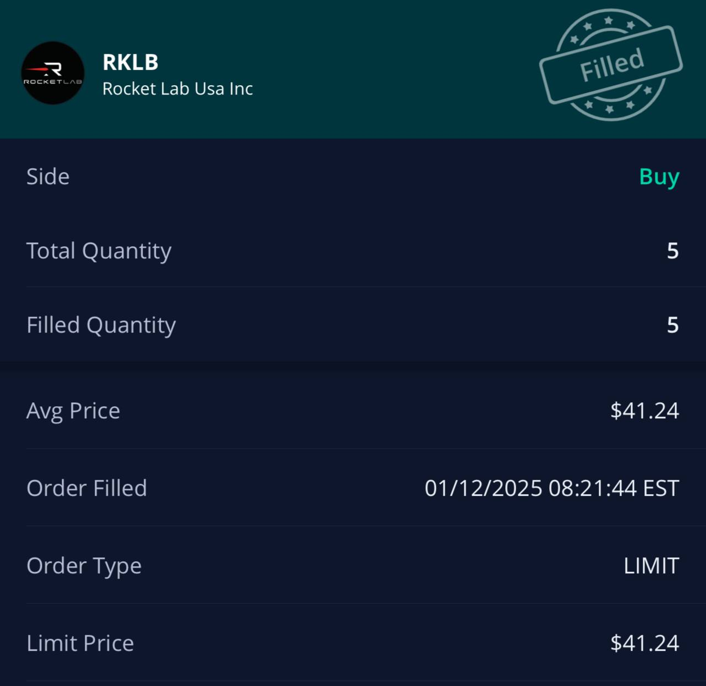
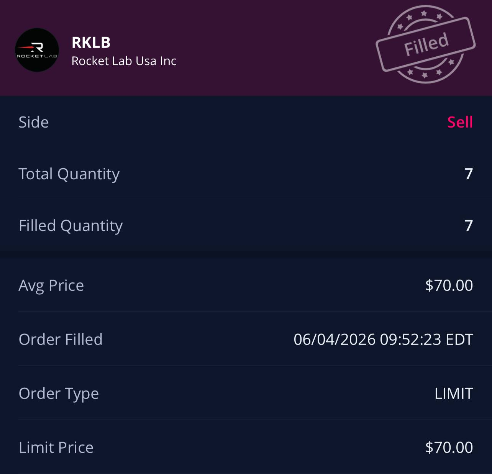

Trading is a SKILL not a SYSTEM.
Now im gonna talk about actually making money but im not gonna just spew out stocks to buy and when to buy them bc i want u guys to actually learn how to do it urself. But i will talk about my main play right now, which is $RKLB (rocket lab). RKLB is a space company about to launch a rocket called Neutron. i chose RKLB because i am making a sector bet that space is set to take off (haha) this year.
The TACO trade
But a major part of this play was TACO. TACO means Trump Always Chickens Out, and its a new investing "strategy" that consists of trump introducing tariffs or sanctions or something, then the market gets really scared and everything drops, but after like 2 days trump will cancel them and the markets go back to normal. By buying when everything drops i get in at a relatively low price, and once the markets go back to normal i will have made money. before trump came into the picture this strategy was also known as buying the dip.
The trade in practice
Trump announced tariffs on imports. $RKLB dropped ∼26% that month alone. Thesis: macro noise, not RKLB risk. Neutron launch timeline unchanged.

Tariffs recovered. $RKLB recovered. Exited partial position at +70%. (note: I added to this position later on with an average holding of around $42)

Two problems with buying the dip
Two main problems with buying the dip: BP and the falling knife. BP is buying power and it refers to the amount of cash you have lying around to invest. i always hear about people going full port into the market with 0 cash left, and being unable to buy dips that are very obviously going to go back up. so try to keep at least some cash lying around to make plays when they come along.
Falling knife is the only real risk with this strategy. Some people call buying the dip "catching a falling knife" which is true in some cases where the stock just doesn't recover from the dip. I just try to stay updated on the news from the company and make sure i fully understand why the stock dipped. If i dont understand it, i wont make the play. By understanding it you will know or at least be confident that it will recover.
Know who's on the other side
I always make sure i know who is on the other side of my trade, so in the RKLB TACO trade the person is someone overly scared of trump and not enough risk tolerance. my higher risk tolerance will be compensated by the risk premium of taking this bet.